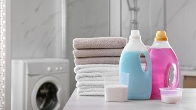

Detergen yang biasanya digunakan untuk membersihkan pakaian dari kotoran dan noda rupanya punya kegunaan untuk
hal lain. Ada banyak manfaat detergen selain mencuci pakaian. Detergen pada dasarnya seperti sabun, namun
campuran bahannya memiliki daya cuci yang lebih baik. Beberapa campuran bahan yang ada di detergen berupa
surfaktan, builder, filler, sampai aditif. Surfaktan membuat fungsi detergen efektif untuk membersihkan pakaian.
Sebab, kandungan surfaktan memiliki manfaat mengangkat kotoran yang menempel di permukaan kain. Sementara aditif
merupakan kandungan tambahan dalam detergen. Misalnya, pewangi, pelarut, pelembut, pemutih, dan sebagainya.
Berikut ini adalah manfaat detergen selain untuk mencuci pakaian
